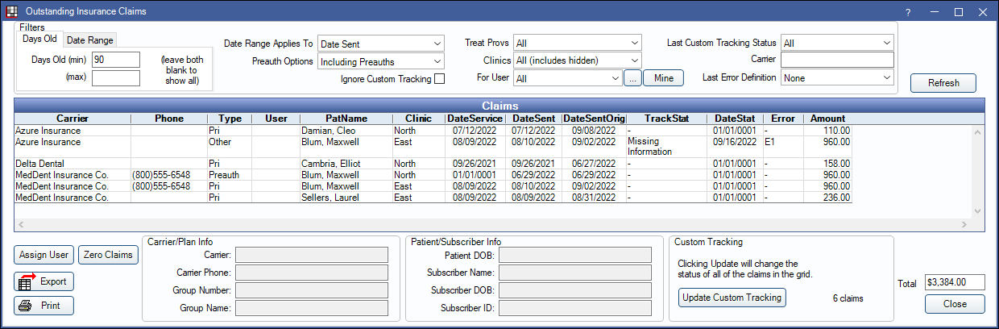
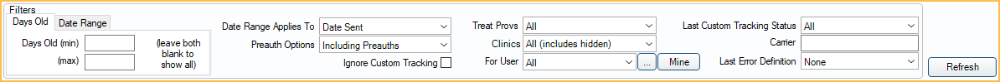
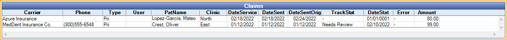
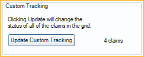
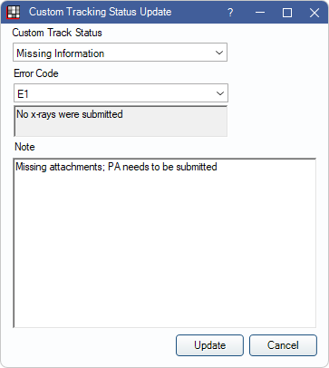

Outstanding Insurance Claims Report
Track outstanding insurance claims and preauthorizations and assign to users for follow up using the Oustanding Insurance Claims Report.
In Standard Reports, in the Monthly section, click Outstanding Insurance Claims.
This report is useful for tracking claims that have been sent, but not received. From here users can also update tracking status for many claims at once or delegate staff to follow-up on claims.
To control user access to this report, see Report Setup: Security Permissions.
Filters
Select filters to update the claims or preauthorizations listed in the grid.
- Days Old (min/max): Filter by claim age. The age of the claim depends on the date type selected in the Date Range Applied to filter. Leave both fields blank to show all claims.
- Date Range (from/to): Filter by a date range. Use the Date Range Applies to filter to select which date type to use.
- Date Range Applies to: Select what date type to use when filtering the report.
- Date Sent: Date the claim was last sent.
- Date Sent Orig: Date the claim was originally sent.
- Date of Service: Date of service of procedures on claim.
- Preauth Options: Select option for displaying Preauthorization.
- Including Preauths: Include preauthorizations.
- Excluding Preauths: Do not include preauthorizations.
- Only Show Preauths: Only show preauthorizations.
- Ignore Custom Tracking: Do not consider or show claim tracking status in report results (Edit Claim - Status History Tab). If ignored, the days suppressed values as a result of the status will be ignored. If custom tracking status does show in the report (this box unchecked), the report will print in landscape mode.
- Treat Provs: Click the dropdown to select claim treating providers to include. Ctrl + click to select multiple providers or select All to include all listed providers.
- Clinics: Select clinics to include in the report. Ctrl + click to select multiple clinics or check All (includes hidden) to include all clinics, including those marked hidden.
- Filters by clinic assigned to claim.
- If user is restricted to specific clinics, only accessible clinics will list. When checking All (includes hidden), results will include all clinics user has access to, including those marked hidden, and anything unassigned to a clinic; results do not include clinics user is restricted from.
- For User: Select specific users to filter claims assigned to the selected users. Use the dropdown or click [...] to select from a pick list of users. Ctrl + click to select multiple users. Select All to include claims assigned to all users and unassigned claims.
- Select All: Select all users, including those marked hidden.
- Select None: Select no users. Claims filtered in the list are unassigned.
- Mine: View outstanding claims assigned to the logged-on user
- Last Claim Custom Tracking Status: Filter by last recorded claim tracking status. Click the dropdown to select an option. Custom track statuses are attached to claims in the Edit Claim Window, Status Tab.
- Carrier:: Type an insurance carrier name to limit results. Any insurance carriers with matching text in the name will be included in results (e.g., if Health is entered, results will include UnitedHealthcare and HealthDent.
- Last Error Definition: Filter by claim error code. Error codes are attached to claims in the Edit Claim - Status History Tab.
Claims Grid
Click Refresh after setting filter criteria to update the results in the Claims grid.
Click a column title to sort results in ascending or descending order. To view a claim, double-click it. The following columns show by default:
- Carrier Name: The insurance carrier.
- Phone: The insurance carrier's phone number.
- Type: The type of insurance (primary, secondary, etc).
- User: The user assigned to follow-up on the claim.
- PatName: Last name and first name of patient associated with the claim. If Show PatNum: Aging, OutstandingIns, ProcsNotBilled is enabled in Report Setup: Misc Settings, also includes Patient Number.
- Clinic: The clinic on the claim. Only shows if Clinics are enabled.
- DateService: Date of service on the claim. A date of 01/01/0001 indicates there is no date of service and indicates this is a preauthorization.
- DateSent: Last date the claim was sent. Differs from DateSentOrig if claim has been re-sent. If claim has been re-sent multiple times, this reflects the most recent date the claim was re-sent.
- DateSentOrig: Date the claim was originally sent. If the claim has never been re-sent, this will be the same as DateSent.
- TrackStat: The last claim tracking status entered. This column won't populate results if Ignore Custom Tracking is checked.
- DateStat: The date the track status was entered. This column won't populate results if Ignore Custom Tracking is checked.
- Error: The Claim Error code, if one exists. This column won't populate results if Ignore Custom Tracking is checked.
- Amount: The total fee billed to each carrier. This is not the amount that will be paid, so do not use it to determine outstanding insurance payment amounts. This may also differ from the amount billed to the patient's account if the preference Claims Show UCR, fee not billed fee is enabled in the Other Ins Info tab of an insurance plan.
The following fields do not show up by default. They can be added to the report in Display Fields.
- GroupNum: Group number for the subscriber.
- GroupName: Group name for the subscriber.
- SubName: Subscriber name.
- SubDOB: Subscriber date of birth.
- SubID: Subscriber ID.
- PatDOB: The date of birth of the patient on the outstanding claim.
Total: Shows the total fee billed to insurance (i.e., Amount) for all claims in the grid.

Right-click options: Right-click on a claim row to select one of the following options:
- Go to Account: Jump to the patient's Account module without closing the report window.
- Assign to Me: Assign the claim to the logged-on user.
- Assign to User: Assign the claim to any user.
Buttons

Assign User: Select claims from the grid and click to assign to a specific user. To remove user assignment, click Assign None from the Pick User window.
Zero Claims: Select claims from the grid and click to automatically mark as received. If no items are selected, all claims in the grid will be received. Requires the "Security Admin" Permission.
- A warning appears after clicking the button. After clicking OK on the warning, all selected claims are changed to status of Received and all associated Claim Procedures ( claimprocs ) are marked received.
- Claims are marked No Payment with $0 write-offs.
- After claims are received, users are not prompted for secondary claims. Use the Claims Not Sent Report to find and send any outstanding secondary claims if needed.
Export: Click to export the list of claims and preauthorizations as a .txt or .xls file.
Print: Click to print the report.
View Carrier/Plan and Patient/Subscriber Info
Click a row in the Claims grid to view information for the selected row.

Custom Tracking
Use this tool to change the Track Status or Error Code of all claims currently in the grid. The tool is only enabled for users with the Update Custom Tracking security permission. See Definitions: Claim Custom Tracking for additional information.
To update Custom Tracking Status:
- Change report filter criteria as needed.
- Click Update Custom Tracking.
 - Click the dropdown to select a status.
- Add a note if desired.
- Click Update. The Track Status, Error Code and Date Status for all claims will update.